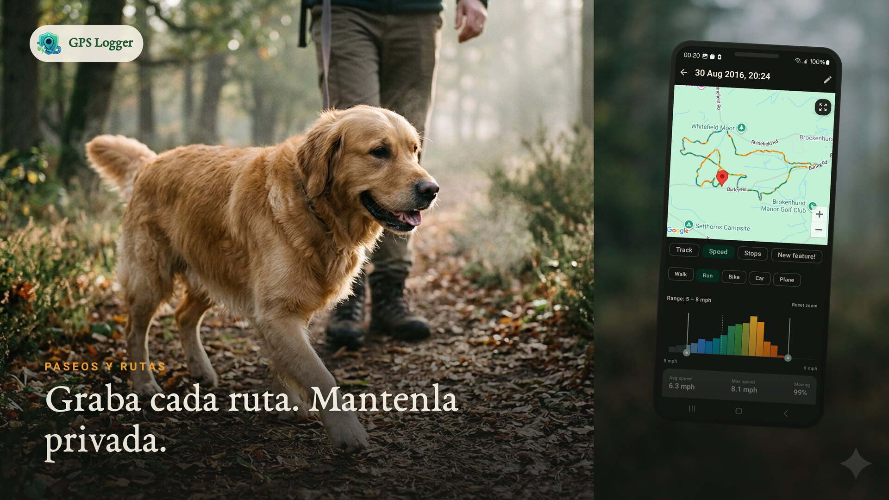
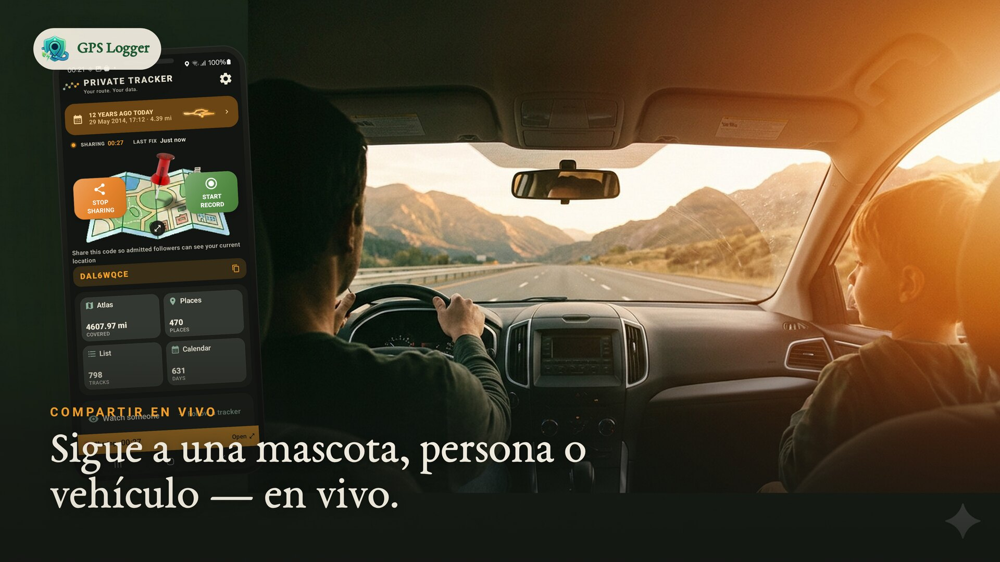
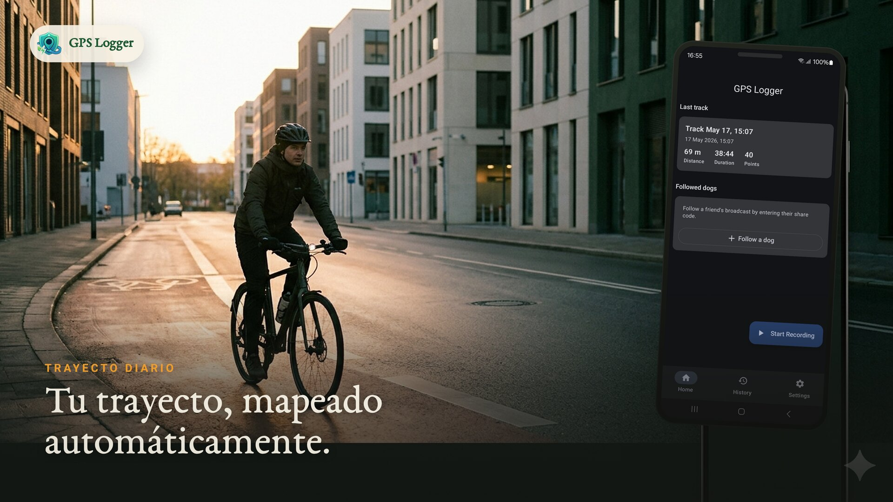
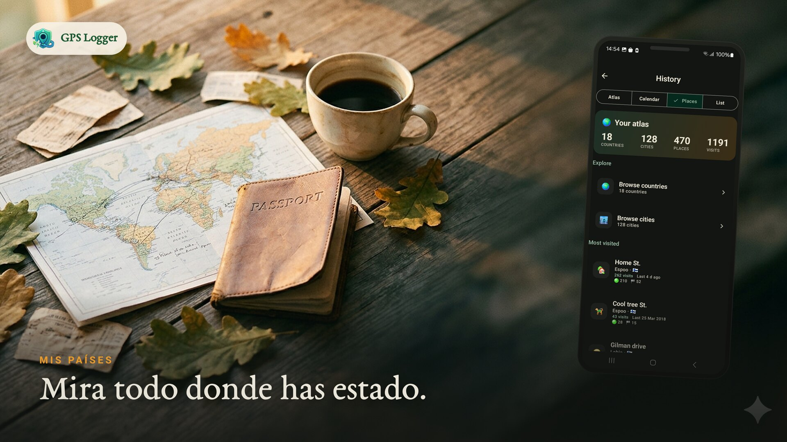
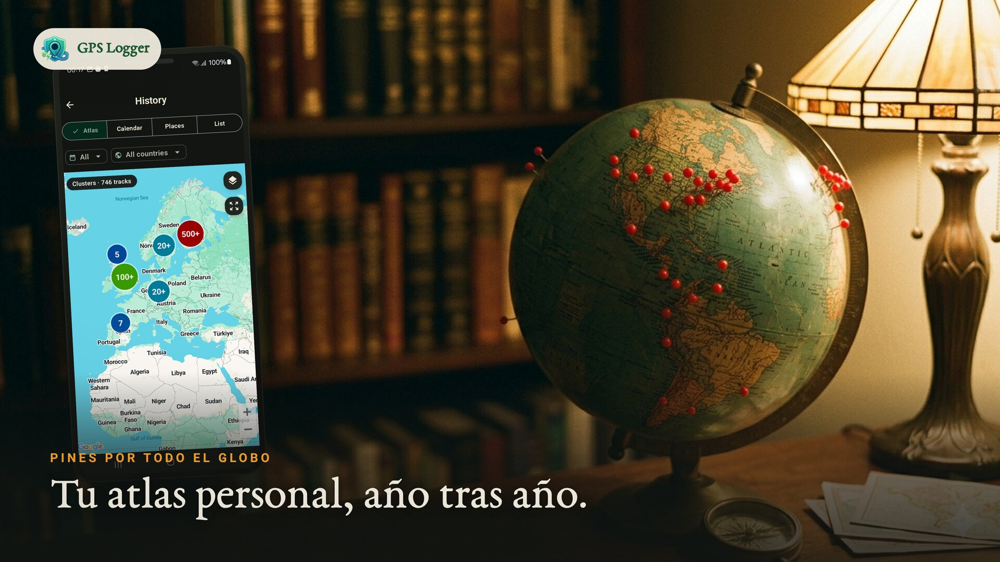
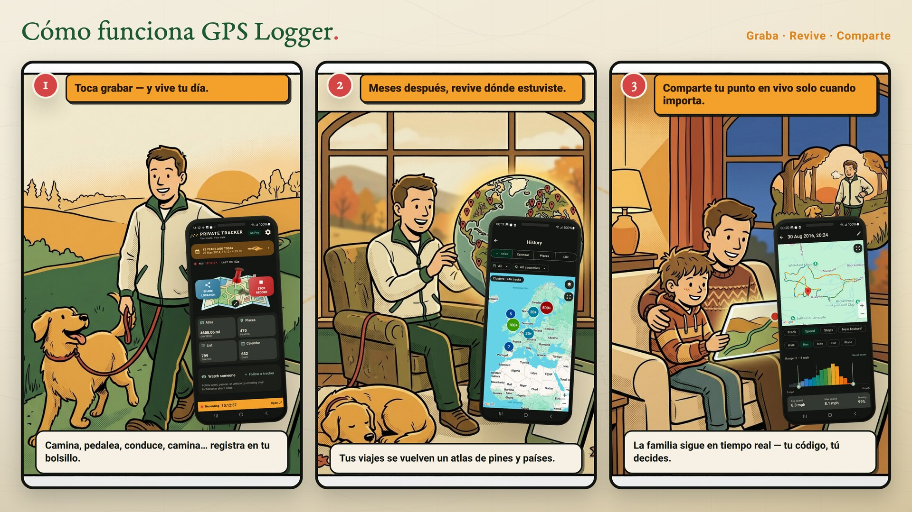

Grabar una ruta con la pantalla apagada
Inicia una grabación visible, bloquea el teléfono y conserva un track limpio de paseos, rutas, salidas, trayectos y viajes.
GPS Logger privado · alternativa a Google Timeline
Graba caminatas, excursiones, rutas en bici y viajes por carretera con la pantalla apagada. Toca cualquier día registrado para revivir paradas, movimientos y momentos en una timeline privada, y exporta GPX/KML cuando necesites tus archivos.

Historia del día
Toca grabar antes de caminar, hacer senderismo, montar en bici, correr, conducir o visitar un lugar.
Toca un día registrado para ver una timeline de paradas, movimientos y momentos.
GPX y KML por track, además de una copia ZIP de todo el historial. Siempre portátil.
El uso compartido en vivo opcional transmite tu posición actual, no una ruta completa en la nube.
Por qué la gente usa GPS Logger
Usa GPS Logger cuando Google Timeline ya no sea suficiente, cuando otra app esconda GPX detrás de un muro o cuando necesites grabar rutas con la pantalla apagada para senderismo, trayectos, viajes o trabajo de campo sin crear un perfil social de fitness.





Para qué se instala
Inicia una grabación visible, bloquea el teléfono y conserva un track limpio de paseos, rutas, salidas, trayectos y viajes.
Convierte tus tracks guardados en un atlas personal: mapa, días registrados, lugares repetidos, países y estadísticas.
Importa tracks GPX antiguos, exporta GPX/KML cuando lo necesites y guarda una copia ZIP fuera de la app.
Envía un código restablecible cuando alguien necesite seguir tu posición. Al detenerlo, la sesión en vivo se elimina.
Usa registros de ruta para viajes por carretera, visitas de campo, comprobaciones de mapas, notas al aire libre o recuerdos.
Los archivos abiertos y el almacenamiento local mantienen útil tu historial aunque más adelante cambies de herramienta.
Míralo en acción

Cómo funciona

Toca una vez y listo. Rastrea en tu bolsillo mientras vives tu día.
Toca un día para ver la ruta, las paradas, los movimientos y las notas que lo formaron.
Envía tu ubicación en vivo con un código restablecible y un límite de seguidores que tú definas.
Conjunto de funciones
Inicia una grabación para cualquier caminata, excursión, paseo, viaje, carrera o trayecto. Sigue rastreando en segundo plano y guarda tu ruta, distancia, duración y velocidad cuando te detienes.
Toca un día del calendario para ver un mapa y una historia cronológica de caminatas, rutas, paradas y momentos. Se crea en vivo desde tracks guardados; no edita tus archivos.
Un mapa de por vida de todos tus recorridos, un calendario de días registrados, los lugares a los que vuelves y los países que has cruzado.
Comparte tu posición actual con un código restablecible y un límite de seguidores que tú elijas (1–20). Solo se almacena tu posición actual y se elimina cuando te detienes.
Exporta trayectos individuales como GPX o KML, o haz una copia de seguridad de todo tu historial como un archivo GPX ZIP. Formatos abiertos, tus datos, en cualquier momento.
El rastreo adaptable al movimiento reduce la frecuencia del GPS cuando estás quieto. Se muestra una notificación en primer plano mientras grabas, con inicio automático opcional tras un reinicio.
No necesitas cuenta para registrar. Las rutas viven en tu teléfono, compartir en vivo es opcional y puedes restablecer tu código para compartir o eliminar trayectos cuando quieras.
Pantallas reales de la aplicación


Guías de registro GPS
Timeline
Crea una timeline día a día de rutas que inicias, detienes, exportas y conservas en tu teléfono.
Compartir en vivo
Comparte la posición actual de forma temporal sin convertir cada movimiento en un rastro en la nube.
Elevación
Corrige altitud ruidosa, picos imposibles y desnivel acumulado usando datos de terreno.
Comparación
Elige entre un diario de rutas privado, una red de entrenamiento o ambos.
Importación y migración
Lleva rutas antiguas desde archivos GPX sueltos o copias ZIP a un atlas común.
Flujo de trabajo
Exporta rutas portátiles para mapeo, GIS, archivos de viajes y análisis de rutas.
GPS Logger se ejecuta como servicio en primer plano para que la grabación continúe cuando la pantalla está apagada o cambias de app. El muestreo adaptable al movimiento ayuda a ahorrar batería y el inicio automático opcional puede continuar una sesión tras un reinicio.
Las rutas permanecen en tu teléfono a menos que elijas compartirlas en vivo o exportarlas. El uso compartido en vivo almacena solo tu posición actual y la elimina cuando te detienes. La visualización de mapas y los diagnósticos utilizan los proveedores de servicios descritos en la política de privacidad.
Preguntas frecuentes
No. El registro comienza solo cuando tú lo activas y se detiene cuando tú lo detienes. La única excepción es el inicio automático opcional tras un reinicio, que tú mismo habilitas.
En tu dispositivo. Nada se sube a menos que elijas compartir en vivo tu posición actual o exportar un archivo.
Compartes un código restablecible y eliges un límite de seguidores. Quien tenga el código ve solo tu posición actual en un mapa en vivo. La posición se elimina cuando detienes la sesión.
Sí. Exporta cualquier trayecto como GPX o KML, o haz una copia de seguridad de todo tu historial como un GPX ZIP. No hay restricciones.
Sí. Instala la app y graba rutas reales primero. Si más adelante necesitas más capacidad, la app explica las opciones disponibles en el contexto adecuado.
Sí. Puedes importar archivos GPX seleccionados o copias ZIP. La app muestra los límites actuales antes de empezar.
Sí. Un servicio en primer plano mantiene el registro en segundo plano. Para sesiones muy largas, sigue la guía de batería de la aplicación para que Android no lo suspenda.
Empieza con un paseo, trayecto o viaje. Expórtalo como GPX, guárdalo en tu atlas o deja que tu historial privado crezca con el tiempo.